| 日付 | 2009年7月17日（金） - 2009年7月19日（日） | ||||||
|---|---|---|---|---|---|---|---|
| 山域 | 南アルプス | ||||||
| メンバー | 単独 | ||||||
| 山行形態 | 前夜泊2泊3日テント泊 | ||||||
| アクセス | 電車、バス | ||||||
| ルート (Map) |
|
3日目
4:55 荒川小屋を出発する。
今日も天気は最悪だ。天気予報を見て山に入ったのだが、
ここまで酷い天気が続くのは初めてだ。
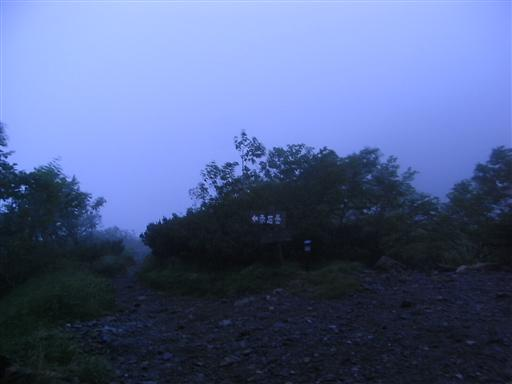
雪渓をトラバースする。斜面には所々にまだ雪が残っている。
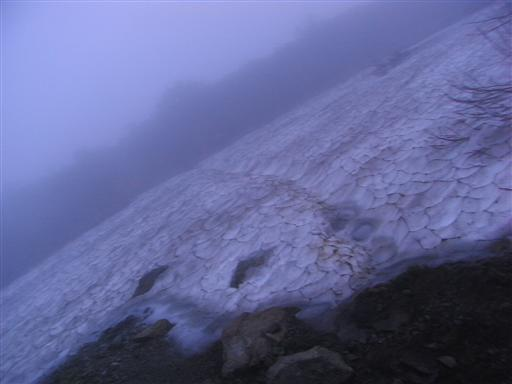
トラバース道から稜線に出ると凄まじい暴風雨に襲われる。
歩くのも困難な風で、雨が顔に当たって痛い。
今日は聖平小屋まで行く予定だが、これではとても無理だろう。
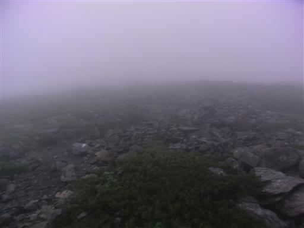
6:36 小赤石岳山頂到着。標高3081m。
この先でザックカバーを飛ばされてしまい、慌てて取りに行こうと思って
置いたザックが、谷底に転げ落ちてしまう。
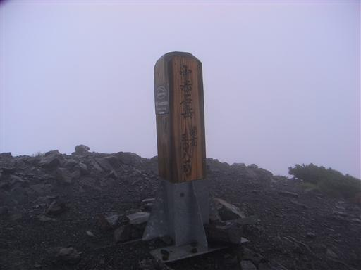
必死に沢を下っていくと、奇跡的にザックは岩棚の上で止まっていた。
ザックの滑落距離は、標高差にして200mほど。
途中でザックの天蓋が開いたようで、いろいろなものをロストしてしまった。
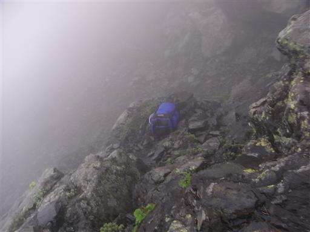
岩棚に乗らなかったら、ザックはこの沢をどこまでも転がっていっただろう…
すぐ下に小屋があるので、装備0でも無事に下山はできるが、
さすがにザックロストは洒落になっていない。今回の出来事は反省。
ここから暴風雨の稜線まで登り返す気にはなれないので、
途中で交差した登山道まで戻ってそのまま下山することにする。
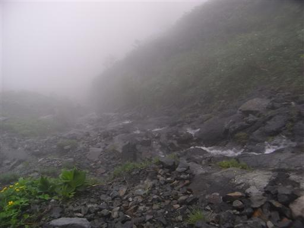
8:35 赤石小屋到着。
途中ここから赤石岳をめざす人と何人もすれ違った。
稜線まで到達しながら暴風雨に阻まれ、20分の距離の赤石岳を諦めて下山してくる人もいる。
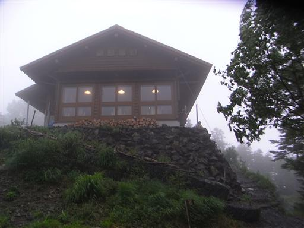
明日は日曜なので未練はあるが、事故を起こしたのでとりあえず下山。
下山と決まれば、できるだけ今日中に家に帰りたい。
長い長い尾根を飛ばして歩いていく。
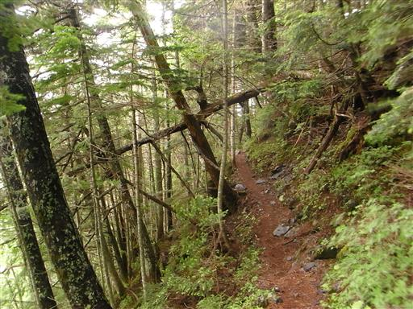
雲の下に出ると視界は広がる。
決して天気は良くないが、稜線と比べると天国のような穏やかさだ。
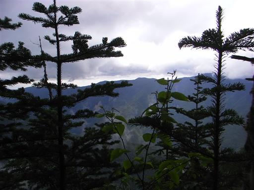
10:29 椹島ロッジに下山。
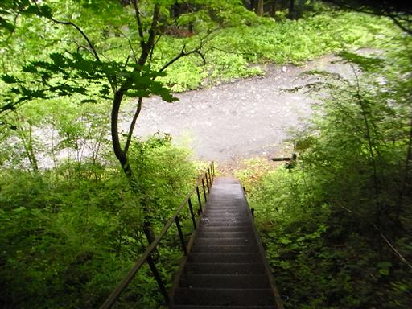
本来なら明日に畑薙第一ダムに直接下山する予定だったのだが、
椹島という中途半端な場所に下ってしまったため、ひたすら車道を歩かなくてはならない。
バスの時間まで4時間弱、コースタイムは5時間だ。
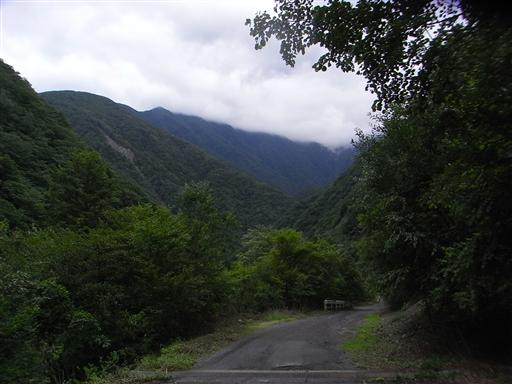
この10kmを越える車道は一般車通行禁止で、東海フォレストの小屋に泊まらない人間は歩くしかない。
しかし、登山道入口近辺には車がたくさん停まっている。
静岡県職員なら自由に許可が下りるという話も聞くが…
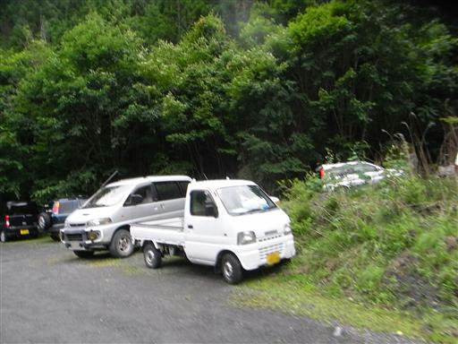
赤石沢に創られた赤石ダム。湖面の色はなかなかきれいだ。
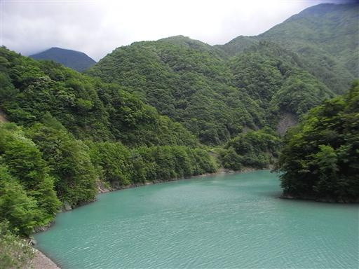
赤石ダムを過ぎると、沢は大井川と合流する。
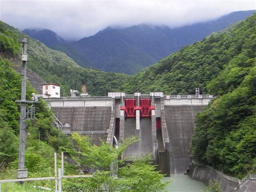
笊ヶ岳登山口に到着する。少々マイナーなルートだが、
ここからも笊ヶ岳に登ることができる。
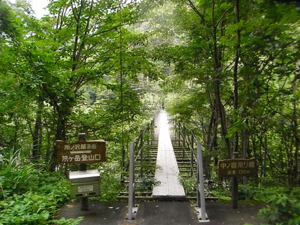
右手には大河・大井川がゆったりと流れている。
青薙山登山口を通り過ぎ、あと1時間程度のところで、通りがかった車に拾ってもらえる。
筑波大学の研究者で、教授と学生の2人組だった。
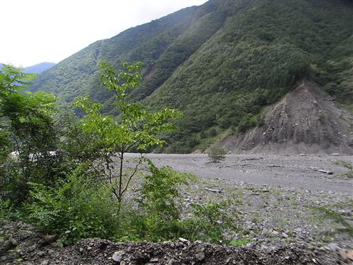
車は速い。あっという間に畑薙第一ダムに到着する。
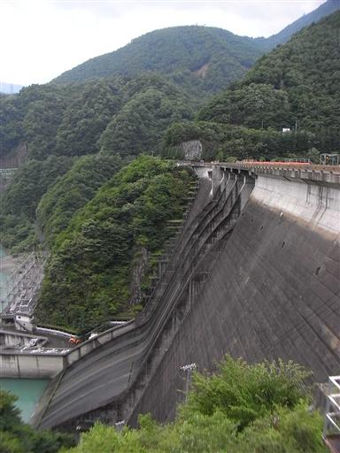
畑薙第一ダムは大井川を堰き止める巨大なダムだ。
ここまでは一般車進入可で、バスも出ている。
ここからバスに乗って帰る。
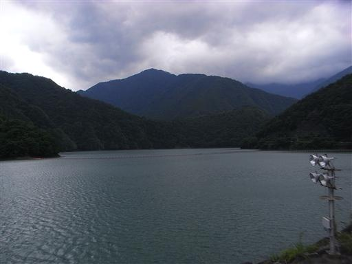
下界に出ると青空が広がっていた。
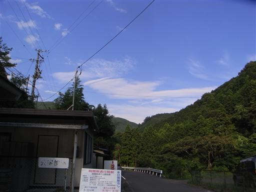